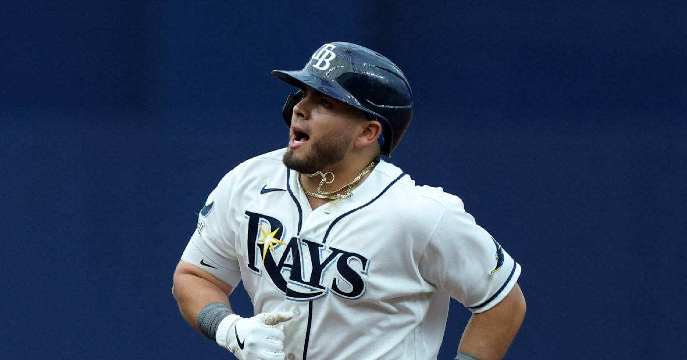

Rays sweep the Yankees out of the ALDS
A fan's arm turned a tying homer into an RBI double, and the Yankees' season ended in a three-game sweep.

Disclosure: this post contains affiliate links. I earn a commission on qualifying purchases.
The play that ended it
Anthony Volpe's sixth-inning blast cleared the left-field fence — until replay showed a fan's arm guiding it over the wall. The tying two-run homer became an RBI double. The 4-3 loss finished the three-game sweep, and the Yankees' season ended on a fan-interference call.
Where the Rays go now
Tampa Bay heads to its first ALCS since 2020 — a sweep of the Yankees to get there, which is its own kind of statement.
Watch
Source: RAYS vs. YANKEES: ALDS Series Full Game 3 Highlights (October 7) | 2026 MLB Postseason via MLB — full Game 3 highlights including the overturned Volpe homer.
Gear up: [Fanatics](https://fanatics.93n6tx.net/WOLjqe) via Fanatics